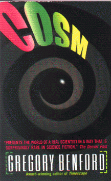

Cosmby Gregory Benford
publisher: Eos Publishing
Fiction, 370 pages | 
(book cover art, Copyright ©1988 Abbenford Ltd)
|
Return to the Book MenuPrevious|Next
Description:
When a young physicist's experiment smashing uranium atoms together goes catastrophically wrong, something new is created -- a heavy, metal ball that is like nothing else on earth and may be a window to another universe. When she "steals" it from the lab, things get more complicated....
Recommended for: People who want to know what doing science is really like. People interested in playing god. People interested in parallel universes and the creation of our own.
Did-you-read questions:
Deadline: February 1, 2005.
These should be easy questions, but you should have the questions ready and keep an eye out during your reading. Each question should be answered with 1-2 sentences.
Note: these questions are not probably not the most important part of the book! Your essay will not have to cover these questions!
- When Alicia removes the cosm ball from Brookhaven, what university does she take it to?
- Who has an accident with the cosm ball when he or she is studying it alone?
- What does Alicia warn Dave Rucker not to do?
- What event causes Alicia to be nervous about her own security?
- What eventually becomes of Alicia's cosm ball?
Report Questions:Deadline: Peer Review Session on February 8, 2005; paper due February 10, 2005.
You should write a 3 - 4 page essay on one of the following questions. Your essay should include examples and references to the book, unless otherwise specified. Page number references are sufficient for citing material from the primary book. If you use outside materials, cite your sources in full. If you would rather write on a different topic, you may, but clear it with Mr. Howe or Ms. Sullivan first.
- Several times in this book, Alicia is refered to as a goddess. Do you think this is an appropriate title? Justify your reasoning.
- What do you think about Max's theory of evolving universes that he describes near the end of the novel? Do you agree with him? Why or why not?
- One of the topics the author (who is a white, male physicist) is trying to describe is the professional and personal issues found by a black, female physicist. do you think he does a good job of this?
- Alicia makes a number of controversial decisions about the cosm ball. Do you think she did the right things? Why do you agree with her, or what would you have done differently?
Graphic and Presentation:
Deadline: February 21 - March 3, 2005.You will give a 10 minute presentation on both of the following:
- Convince your peers that they should (or should not) read this book. (This may include a brief summary of the book.) Give examples of what was cool or worthwhile in the book, and what you got out of it (or didn't).
- Describe a (realistic) science idea that you learned about in this book, citing information from at least 2 external sources (other than the dictionary). If you would like help choosing or understanding an idea from your book, you are invited to come talk to Mr. Howe or Ms. Sullivan.
Note: This presentation should not be just a reading of your paper!Along with this presentation, you should have a graphic that will go with it. A Power Point presentation is recommended, but if you have a special idea for a something else, such as a model, an original video presentation, or a well done drawing/ painting/ sculpture/ etc., you may do so, provided it involves a similar level of effort and polish. Speak to Mr. Howe or Ms. Sullivan first if you are considering an alternate graphic format to the Power Point.
Return to the Book MenuPrevious|Next